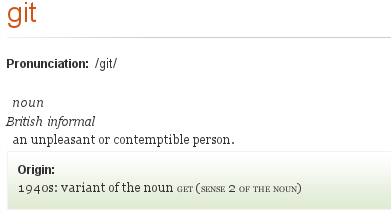

<!DOCTYPE html>
<html>
  <head>
    <title>Dyn Lunch and Learn: Using Git</title>
    <meta charset='utf-8'>
    <meta name='apple-mobile-web-app-capable' content='yes'>
    
    <link rel="stylesheet" href="h5s/page.css" type="text/css" media='all' />
    
    <link rel="stylesheet" href="h5s/screen.css" type="text/css" media='screen' title="All at once" />
    <link rel="alternate stylesheet" href="h5s/slides.css" type="text/css" media='screen' title="Slideshow" />
    <link rel="alternate stylesheet" href="h5s/print.css" type="text/css" media='screen' title="Print Preview" />
    
    <link rel="stylesheet" href="h5s/print.css" type="text/css" media="print" />
    <style>
    pre,div.code{background:black;color:#3f3;line-height:105%}
    pre.just-built,.just-built pre {color:yellow}

    </style>
    <script type='text/javascript'>
      var SLIDESHOW_MODE = 0; // change it to 1 to start in slideshow mode
    </script>
    <script src='h5s/slides.min.js' type='text/javascript'></script>
  </head>
  
  <body>
    <section class='slides layout-widescreen template-default'>
      <article>
        <h1 style='font-size:2000%;opacity:.1'>
          Git
        </h1>
        <h2>
          Why and how to use Git?
        </h2>
        <p style='margin-top:2em'>
          Dyn Inc Lunch n' Learn Seminar (Part I)
        </p>
        <div class='author' style='font-size:smaller'>
          <a href='https://twitter.com/alexsergeyev'>@alexsergeyev</a>
        </div>
      </article>

      <article>
        <h2>Goals</h2>
        <ul class='build'>
        <li>Know git basics to be able to use it while coding.</li>
        <li>Learn where to get more information to learn about git.</li>
        <li>Understand some differences between git and svn.</li>
        </ul>
        <div class='build'>
          <h4>...</h4>
          <p class='labrat'>take a minute and write your own ones.</p>
        </dib>
      </article>

      <article>
        <h2>
          Git
        </h2>
        <p>
          Git is revision control system. You use one to make sure changes you do over time could be restored.
        </p>
        <p>
          Git positions itself as distributed, decentralized RCS.
        </p>
        <p>
          Every working copy is effectively a fully functional fork of git's
          Direct Acyclic Graph structures and work files extracted from them.
        </p>
        <p>
          (stores all revision information in BLOBs optimized for fast operations)
        </p>
      </article>

      <article>
        <h2>
          "Git" stands for...
        </h2>
        <div class='build'>
        <div>
        <q>
        I&#146;m an egotistical bastard, and I name all my projects after myself. First &#145;Linux&#146;, now &#145;git&#146;.
        </q>
        <div class='author'><small>
        (Linus Torvalds, according to <a href='http://en.wikipedia.org/wiki/Git_%28software%29#Name'>Wikipedia</a> and its sources)
        </small></div>
        <p>
        
        </p>
        </div>
        </div>
      </article>

      <article>
        <h2>
          &#147;Why do I need all this?!<br/>
          &nbsp;&nbsp;&nbsp;&nbsp;&nbsp;&nbsp;&nbsp;&nbsp;Just say how to use it!&#148;
        </h2>
        &nbsp;
        <ul>
        <li>Make sure git installed or install it &nbsp;(<a href=http://git-scm.com/>http://git-scm.com/</a> can help)
        <li>Configure two options
        <div class='build'><pre>
$ git config --global user.name "Your Name"
$ git config --global user.email "yname@example.org"</pre></div>
        <li>Create your repository
        <div class='build'><pre>
$ mkdir myproject
$ git init myproject</pre></div>
        <li>Share your work
        <div class='build'>
<div class='code' style='margin-top:0'><pre>
$ ssh githostname.tld git init --bare /git/myproject.git
$ git remote add dyngit ssh://svn.corp.dyndns.com/git/myproject.git
$ git push dyngit master</pre>
<div class='build'><pre>
$ git remote add github git@github.com:username/myproject.git
$ git push github master</pre></div></div></div>

        </ul>
      </article>

      <article>
        <h2>
         ...but directed graphs are so cool!
        </h2>
        <p>
        
        </p>
        <small>
        <ul>
        <li>Revision is the product of previous state and applied diff.
        <li>Git is one big hierarchy of objects that represent revisions.
        <li>HEAD, master and others track history of revision objects they point to.
        </ul>
        </small>
      </article>

      <article>
        <h2>
          Creating Git Repository
        </h2>
<div class='code build'>
<pre>
$ git init myrepo
Initialized empty Git repository in myrepo/.git/
</pre>
<pre>
$ cd myrepo
$ echo "Hello World" > test.txt
$ git add test.txt
</pre>
<pre>
$ git commit test.txt -m 'Adding a greeting'
[master (root-commit) 4be30d5] Adding a greeting
 1 files changed, 1 insertions(+), 0 deletions(-)
 create mode 100644 test.txt
</pre>
<pre>
$ git log
commit 581ff59640caec1cf54d1390c626a1a40e7a74b0
Author: Alex Sergeyev <asergeyev@dyn.com>
Date:   Fri Jun 1 18:02:36 2012 -0400

    Adding a greeting
</pre>
</div>
      <p class='labrat'>try it with "git status" after various steps</p>
      </article>

      <article>
      <h2>Branching</h2>
<div class='code build'>
<div>
<div class='note'>
"checkout -b" is same as<br/>
<code style="font-size:20px">git branch feature; git checkout feature</code>
</div>
<pre>
$ git checkout -b feature
Switched to a new branch 'feature'
$ git branch -v
* feature 581ff59 Adding a greeting
  master  581ff59 Adding a greeting
</pre></div>
<pre>
$ echo 'Git is cool' > aboutgit.txt
$ git add aboutgit.txt
$ git commit -m 'New article'
 1 files changed, 1 insertions(+), 0 deletions(-)
 create mode 100644 aboutgit.txt
</pre>
<pre>
$ git checkout master
Switched to branch 'master'
$ git branch -v
  feature f11314d New article
* master  581ff59 Adding a greeting
$ ls
test.txt
</pre><pre>
$ echo "As introduced by Brian Kernighan & Dennis Ritchie" >> test.txt
$ git commit test.txt -m 'Some background info'
[master 6fb241a] Some background info
 1 files changed, 1 insertions(+), 0 deletions(-)
</pre>
</div>
</div>
      </article>

      <article>
        <h2>
          Cloning/remote branching
        </h2>
<div class='code build'>
<pre>
$ git clone ssh://localhost/~/myrepo newdir
Cloning into 'newdir'...
asergeyev@localhost's password: 
remote: Counting objects: 22, done.
remote: Compressing objects: 100% (14/14), done.
remote: Total 22 (delta 5), reused 0 (delta 0)
Receiving objects: 100% (22/22), done.
Resolving deltas: 100% (5/5), done.
</pre><pre>
$ cd newdir
$ git branch -v
* master 6fb241a Some background info
</pre><pre>
$ git branch -rv
  origin/HEAD    -> origin/master
  origin/feature f11314d New article
  origin/master  6fb241a Some background info
</pre>
<div>
<div class='note'>no backtracking here</div>
<pre>
$ cd ../myrepo
$ git branch -r
$ 
</pre>
</div>
</div>
<div class='build'>
<p>Remote branches are fully independent from yours.</p>
<p>You can change name of branch when you pulling it.</p>
</div>
      </article>

      <article>
        <h2>
          Reflog 
        </h2>
        <p class='gray'>(nap if you did not like DAG part)</p>
<div class='code build'>
<pre>
$ git reflog master
6fb241a master@{0}: commit: Some background info
581ff59 master@{1}: commit (initial): Adding a greeting
</pre>
<pre>
$ git reflog feature
f11314d feature@{0}: commit: New article
581ff59 feature@{1}: branch: Created from HEAD
</pre><pre>
$ git checkout feature
Switched to branch 'feature'
$ git checkout -q master
$ git checkout -q feature
</pre><pre>
$ git reflog HEAD
f11314d HEAD@{0}: checkout: moving from master to feature
6fb241a HEAD@{1}: checkout: moving from feature to master
f11314d HEAD@{2}: checkout: moving from master to feature
6fb241a HEAD@{3}: commit: Some background info
581ff59 HEAD@{4}: checkout: moving from feature to master
f11314d HEAD@{5}: commit: New article
581ff59 HEAD@{6}: checkout: moving from master to feature
581ff59 HEAD@{7}: commit (initial): Adding a greeting
</pre>
</div>
<div class='build'>
<p>As long as you are not re-writing the history<br/>and commit often you 
are safe with&nbsp;git.</p>
</div>
      </article>

      <article>
        <h2>
          Tags: Named References
        </h2>
        <ul>
        <li>Simple placemakers
        <div>
<pre>
$ git tag somename
$ git log somename --oneline
f11314d New article
581ff59 Adding a greeting
$ git reflog somename
</pre>
        </div>
        </li>
        <li>Special static reference logs
        <div>
<pre>
$ git tag -a newtag -m "New tag"
$ git log newtag --oneline
f11314d New article
581ff59 Adding a greeting
$ git reflog newtag
f11314d 581ff59
</pre></div>
        </ul>
        <ol style='list-style-type:disc;line-height:140%'>
        <li>You can push/pull tags adding "--tags" to them.</li>
        <li>Tags work for commands that use commit id or branch name.</li>
        <li>Tags can be PGP signed and verified later.</li>
        </ol>
      </article>

      <article>
        <h2>
          Simple Merge
        </h2>
<div class='code build'>
<pre>
$ git checkout -q feature
$ ls > catalog
$ git add catalog
$ git commit -m "Article catalog"
[feature 95f74c0] Article catalog
 1 files changed, 3 insertions(+), 0 deletions(-)
  create mode 100644 catalog
</pre><div><div class='note'>git merge &lt;branchname></div><pre>
$ git checkout -q master
$ git merge feature
Merge made by the 'recursive' strategy.
 aboutgit.txt |     1 +
 catalog      |     3 +++
 2 files changed, 4 insertions(+), 0 deletions(-)
 create mode 100644 aboutgit.txt
 create mode 100644 catalog
</pre><pre>
$ git commit .
# On branch master
nothing to commit (working directory clean)
</pre></div><pre>
$ WT* WHY!?
bash: !?: event not found
</pre><div><div class='note' style='margin-top:-190px;margin-bottom:190px'>(auto-commits the changeset)</div><pre>
$ git reflog master
14efb87 master@{0}: merge feature: Merge made by the 'recursive' strategy.
6fb241a master@{1}: commit: Some background info
581ff59 master@{2}: commit (initial): Adding a greeting
</pre>
</div>
      </article>

      <article>
        <h2>
          Rebase
        </h2>
<div class='code'>
<div>
<pre>
$ git checkout -qb newart
$ git add story.txt
$ git commit -aqm 'New story'
$ git checkout -q master
$ git mv test.txt hello.txt
$ git commit -aqm "Better file name"
$ git checkout -q newart
$ git commit -aqm 'Adding story to the catalog'
$ git checkout -q master
</pre>
</div>
<div class='build'><div>
<div class='note'>git rebase &lt;branchname></div>
<pre>
$ git rebase newart
First, rewinding head to replay your work on top of it...
Applying: Better file name
</pre>
</div>
<div>
<pre>
$ git log --graph --pretty=oneline --abbrev-commit
* a60f50e Better file name
* 8dcbafb Adding story to the catalog
* c3dcc45 New story
*   14efb87 Merge branch 'feature'
|\  
| * 95f74c0 Article catalog
| * f11314d New article
* | 6fb241a Some background info
|/  
* 581ff59 Adding a greeting
</pre>
</div>
</div>
<div class='build'><div>
<div class='note'>very good reading</div>
<pre>
$ man git-merge
$ man git-rebase</span>
</pre>
</div></div>
</div>
      </article>

      <article class='smaller'>
        <h2>
          What happens
        </h2>

<div>
 (merge)<br/>
 (rebase)
</div>
      </article>

      <article>
        <h2>
          Working with remotes
        </h2>
        <p>1. List/update current remotes</p>
<pre>
$ git remote -v
$ man git-remote
</pre>
        <p>2. Sending your work to remote branch</p>
<pre>
$ git push myremote localbranch:remotebranch
$ git push myremote
$ git push myremote +localbranch:remotetomerge
</pre>
        <p>3. Checking out changes made by others</p>
<pre>
$ git pull --no-commit myremote remotebranch:localbranch
$ git pull myremote
</pre>
        <p>4. Applying patches</p>
<pre>
$ git apply somepatch.diff
</pre>


      </article>

      <article>
        <h2>
          Undoing things
        </h2>
<p>Staged file back to one saved in repo:</p>
<pre>
$ git checkout -- filename.ext
</pre>

<p>Appending stuff to last commit:</p>
<pre>
$ git commit --amend
</pre>

<p>Reverting state to "before last commit:" <sup class='red' style='font-size:50%'>(be careful)</sup></p>
<pre>
$ git reset --soft HEAD^
</pre>

<p>Preparing reversed changeset:</p>
<pre>
$ git revert -n COMMIT_OR_REF
</pre>
      </article>


      <article class='smaller'>
        <h2>
          You are going to like git when you...
        </h2>
<p>1. will know what HEAD~3^2 means</p>
<pre>
$ git show HEAD^^^^2
</pre>
<p>2. would consider making your own command aliases</p>
<pre>
$ git config --global alias.granny 'show HEAD^^'
</pre>
<p>3. will know difference between two and three dots</p>
<pre>
$ git log --left-right --oneline origin/master...master
</pre>
<p>4. will finish reading about commands with dashes</p>
<pre>
$ man git-cherry-pick
$ man git-diff-tree
$ man git-read-tree
$ git merge --squash -s subtree --no-commit mybranch
</pre>
<p>5. would figure out interactive git tools <sup class='yellow' style='font-size:70%'>(very helpful)</sup></p>
<pre>
$ git rebase -i HEAD~3
$ git add -i
$ git add -p
$ git mergetool
</pre>
      </article>
  <article>
        <h2>
        QUESTIONS?
        </h2>
    </article>
  </body>
</html>
